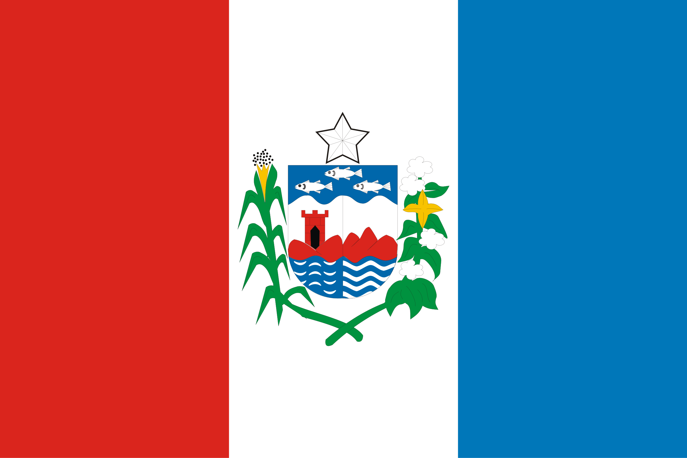
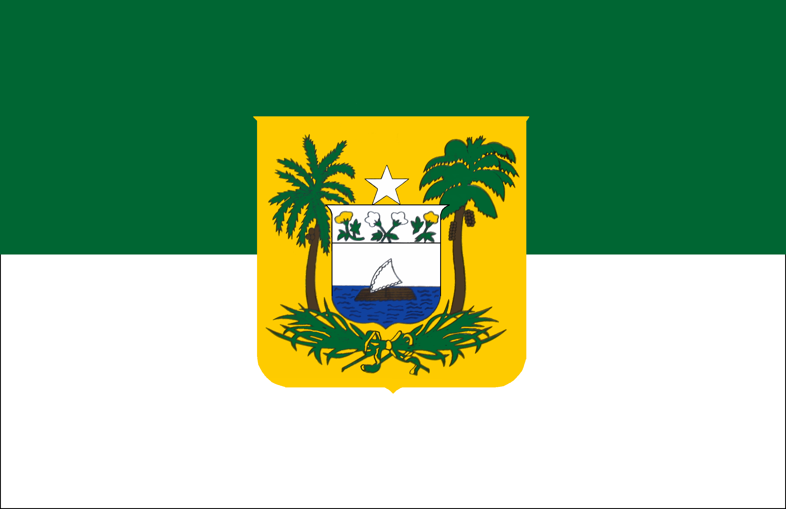
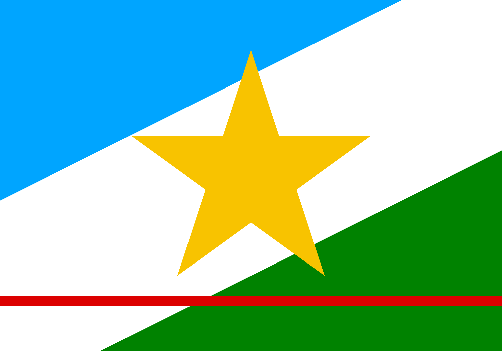
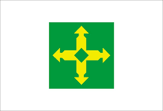

|
: Estado |
População
|
Capital |
Região |
Bandeira |
| Acre |
830.018 pessoas |
Rio Branco |
Norte |
 |
| Alagoas |
3.127.683 pessoas |
Maceio |
Nordeste |
 |
| Amapá |
733.759 pessoas |
Macapá |
Norte |
 |
| Amazonas |
3.941.613 pessoas |
Manaus |
Norte |
|
| Bahia |
14.141.626 pessoas |
Salvador |
Nordeste |
|
| Ceará |
8.794.957 pessoas |
Fortaleza |
Nordeste |
 |
| Espírito Santo |
3.833.712 pessoas |
Vitoria |
Sudeste |
 |
| Goias |
7.056.495pessoas |
Goiânia |
Nordeste |
 |
| Maranhão |
6.776.699 pessoas |
São Luís |
Nordeste |
 |
| Mato Grosso |
3.658.649 pessoas |
Cuiabá |
Centro- oeste |
|
| Mato Grosso do Sul |
2.757.013 pessoas |
Campo Grande |
Centro- oeste |
|
| Minas Gerais |
20.539.989 pessoas |
Belo Horizonte |
Sudeste |
|
| Pará |
8.120.131 pessoas |
Belém |
Norte |
 |
| Paraíba |
3.974.687 pessoas |
João Pessoa |
Nordeste |
 |
| Parana |
11.444.380 pessoas |
Curitiba |
Sul |
 |
| Pernambuco |
9.058.931 pessoas |
Recife |
Nordeste |
 |
| Piauí |
3.271.199 pessoas |
Teresina |
Nordeste |
 |
| Rio de Janeiro |
16.055.174 pessoas |
Rio de Janeiro |
Sudeste |
 |
| Rio Grande do Norte |
3.302.729 pessoas |
Natal |
Nordeste |
 |
| Rio Grande do Sul |
10.882.965 pessoas |
Porto Alegre |
Sul |
|
| Rondônia |
1.581.196 pessoas |
Porto Velho |
Norte |
 |
| Roraima |
636.707 pessoas |
Boa Vista |
Norte |
 |
| Santa Catarina |
7.610.361 pessoas |
Florianopolis |
Sul |
|
| São Paulo |
44.411.238 pessoas |
São Paulo |
Sudeste |
 |
| Sergipe |
2.210.004 pessoas |
Aracaju |
Nordeste |
|
| Tocantis |
1.511.460 pessoas |
Palmas |
Norte |
 |
| Distrito Federal |
2.817.381 pessoas |
Brasilia |
Centro-Oeste |
 |
>